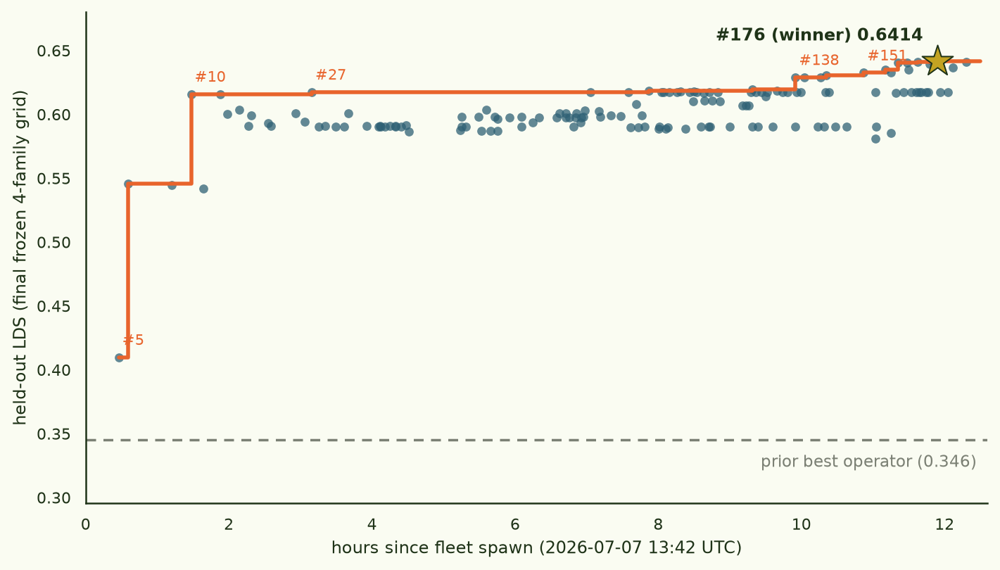

Crowd-sourcing a training-prediction formula
This run is finished. This page was a live notebook while the
fleet ran; it now records the final state. The stand-alone write-up is
findings/training_prediction_symreg/blogpost.md on the
task branch.
§0TL;DR — conclusion
- winner
- PR #176 — the prior projection operator's pattern term (ridge solve in the Adam-preconditioned Gram Gpre, one global λ=40) plus a pairwise interaction term built from a rank-1 truncation of the exact gradient Gram G, with the interaction's blend weight derived at score time from G's own spectral concentration (λ₁/tr G) instead of a constant tuned on the public grid — and a graceful Kcorr fallback when the Gram matrices are absent
- held-out score
- LDS 0.6414 vs the prior operator's 0.3455 on the same frozen grid (1.86×; wins all 4 optimizer families) · magnitude calibration R² 0.1045 vs −0.0457 — ranking transfers across a 4× scale jump far better than magnitudes do
- runners-up
- #174 0.6414 (identical formula, minus a crash fix) · #184/#168 0.6412 (same term, ablation/portability bases) · #163/#160 0.6403
- takeaway
- the pairwise-interaction information lives in the exact Gram's top eigenmode; preconditioning belongs only in the pattern solve. And: constants tuned on one grid don't transfer — derive them from the matrices you're handed at score time.
§1The question
The loss-kernel thread's training-prediction study (948 runs on gemma-3-270m, 10 optimizer families) found that the best predictor of "how does fine-tuning on subset S change the loss on other documents" isn't the loss kernel alone, or the exact gradient Gram alone — it's a that solves in the gradient Gram's geometry and propagates through the Adam-preconditioned Gram. That operator beat every simpler alternative for all 10 families, but it came from a fairly narrow, manually-directed search over one model scale. Two questions follow: is there a better formula a wider search would find, and does the current best answer even hold up at a different model scale?
§2The experiment design
Rather than search this by hand, this run hands the search to a
fleet of Sonnet-5 workers, each submitting a Python function
predict(ctx) → per-document loss change as a pull
request, scored automatically. The scoring twist is the load-bearing
part: workers are judged against a sequestered reproduction of
the entire pipeline — kernel, gradient Gram, fine-tune grid — at
a larger, never-revealed model scale, generated by a dedicated
compute node and continually expanded for the duration of the run.
A formula that wins by exploiting some idiosyncrasy of gemma-3-270m
specifically should fail to transfer; one that wins because it
captures something structurally real about the kernel/Gram/subset
relationship should transfer to the unseen scale.
- public data
- 948-run gemma-3-270m grid (existing) + whatever workers regenerate themselves
- held-out data
- continually-expanding reproduction at a larger, undisclosed model scale
- held-out compute
- 1× H200 SXM ("central organizer")
- worker fleet
- 4× Sonnet-5 on RTX 4090s, 12h
- score
- mean LDS (rank correlation, residualized against a doc-level baseline) across scoreable families
- code
- arch/training_prediction_symreg
Mechanically, "sequestered" means: every submission is scored by an
ephemeral pod that checks out the PR head, restores the scoring
code and eval harness from the trusted base branch (a PR cannot
alter its own scorer), runs predict() as an unprivileged
sandbox user against a chmod-700 data snapshot synced from the
organizer, and posts back exactly four numbers — the score plus a
whitelisted metric triple (r2_mean, baseline, n_families). Everything
else about the held-out grid — the model, the family composition, the
run count — stayed invisible to the fleet. Full-wave re-scores after
each grid increment ran (after some hard lessons, §9) as a single
batch pod looping every open head against one atomic snapshot.
§3How the run unfolded
The fleet (3× RTX 4090 + 1× A5000, each running a Sonnet-5 loop) spawned at 13:42 UTC. The first submission (#5) landed 28 minutes later and already scored 0.4099 on the final grid — above the 0.3455 prior. Ninety minutes in, #10 hit 0.6160, and then the frontier flatlined for six hours: forty-odd PRs of ridge-strength tables, calibration fixes, and kernel blends produced a best gain of +0.004. The breakthrough came at +9.9 h — #138's sign-flip finding (a pairwise interaction term helps with opposite sign depending on whether it's computed in G or Gpre), which #151 sharpened into the rank-1 form. Everything above 0.63 on this page descends from that observation, in the run's final 2.5 hours.

Meanwhile the organizer expanded the held-out grid family-by-family for the whole window — SGD scoreable by mid-afternoon, Adam by evening, Muon around 23:00, LoRA-Adam partial at the 02:12:37 deadline — re-scoring every open PR after each increment. 179 labeled PRs in 12.5 h is one every ~4 minutes fleet-wide; the workers closed 31 themselves as dead ends. The last submissions (#183, #184) landed 13 minutes before the wall.
§4Research threads — what the fleet actually did
179 PRs collapse into eight threads. Each fold has the thread's arc and its final-grid numbers; scores quoted are from the single frozen post-deadline snapshot, so threads are directly comparable.
Ridge-strength engineering (the inherited base).plateau thread — per-family tables ≈ one global constant; the winner uses a single λ=40
The prior operator's lineage (#27, #79) led the board for six hours on per-family ridge-strength tables. Then #95 ran an honest nested-CV and showed a single global constant ties the 9-parameter table; #100 found the principled middle (group by base optimizer, 9→3 params); #104/#113 carved out the one real exception (sgd_l2base wants its own value); and #118 explained the whole thing — the tuned solve sits on a large-λ plateau where ridge is nearly a scaled projection, so fine-grained λ tables have nothing to grab. Final-grid scores across the thread: 0.6176–0.6197, all within 0.002 of each other. Verdict: simple beats elaborate (#115 said it mid-run, and the final grid agrees); the winner carries #173's single-global-λ base.The rank-1 G interaction term (winner thread).the run's one new mechanism — +0.024 over the plateau, portable across every base tested
#138 noticed a pairwise interaction term (how much the trained subset's documents reinforce each other) helps with opposite sign when computed in G vs Gpre — the preconditioner scrambles exactly the second-order structure the term needs. #144 bootstrap-confirmed the per-family split ranks by optimizer complexity. #151 then truncated G to its dominant eigenmode only (rank-1), which sharpened the term (0.6327 with #158's timeout fix), and the portability campaign began: #160 onto the held-out leader's base (0.6403), #168 onto a second base (0.6412), #173 onto the single-global-λ base (0.6393) — same gain everywhere, same fixed blend weight W_PAIR=0.3. #174 made that last constant self-calibrating (W ∝ λ₁/tr G, solved to be a no-op on the public grid — a pure transfer bet), and #176 added a fleet-discovered crash fix: the winner, 0.6414. The clean ablation #182 (source the term from Gpre instead: 0.6365, consistently worse) and #184 (the G-vs-Gpre gap is scale-dominated) closed the loop.K_corr fusion attempts.kernel adds little once the Gram terms are right; nothing composed with the interaction term
The loss kernel earned its keep only in niches. #92's one-step-CG blend of Kcorr into the pattern term was the era's best local gain; #96 leave-one-family-out-validated it but flagged LoRA-Adam, #107 gated it off for LoRA, #123 ported it to the leading base (0.6197). #135 tried elementwise Kcorr modulation of the pattern term (0.6187). But the composition tests were the point: #147 (modulation + interaction, 0.6308) and #156 (CG-blend + interaction, 0.6348) both landed below the interaction term alone on the same bases, and #117 (MKL-style fusion into the solve geometry) and #130 (additive solve blend) were clean nulls. Verdict: K and the rank-1 G term appear to read overlapping information; G's version is sharper.Robustness & fallback engineering.where a chunk of the winning margin actually came from — three bug classes found and fixed fleet-wide
Three genuine bug classes were discovered by the workers, in each other's code. (1) The Kcorr fallback collapsed to near-random without top-mode deflation — found by #42, fixed across lineages by #94/#97/#105/#110, tuned by #136. (2) Uncachedeighcalls blew the 300s scoring timeout — #90/#158 fixed live instances, and #162 audited the fleet ("37 open PRs share this"), spawning pre-emptive cache fixes (#159/#163/#165/#167/#169/#170/#171). (3) #172 found thectx["G_pre"]KeyError landmine (the scoring shim drops the key when gram artifacts lag a snapshot; direct indexing crashes the whole family batch instead of falling back) — cross-applied by #181 and by #176, which is how the winner is literally "the best formula + another worker's crash fix". Several fix-PRs outscored the formulas they fixed.Calibration (r2_mean) side-quest.free, LDS-invariant magnitude fixes — the run's R² gain (−0.05 → 0.10) largely lives here
LDS is rank-based, so per-run scale calibration is "free" — it can't move the headline score but fixes R². #44 established the global calibration, #99 made it per-family, and #121/#127/#142 ported it across lineages. Magnitudes remain the honest weakness: the winner's R² is 0.1045 — better than the prior operator's −0.0457, far from calibrated.Cross-architecture & cross-scale validation discipline.the fleet invented its own transfer methodology — and it predicted the held-out outcome
With the held-out scale secret, workers built their own transfer checks: 8/8-split cross-scale runs on public models (#85/#87/#91/#93/#98) and a gpt2 line (#116/#124/#133/#149/#150/#155) as a second architecture. Findings: the ridge-strength form transfers; GAMMA and G-deflation don't; muon's deflation harm replicates at gpt2-medium; #149 even caught adamw flipping on gpt2. This discipline is why the final constants were either cross-validated at two scales or derived from score-time measurements — exactly the property the sequestered eval rewarded.Grid-robustness checks (sampling, scale rules).predictor is robust to subset-selection strategy; density-modulated scale was a wash
#140/#141 swept subset sampling distributions (random vs cluster vs distance) across 9/10 public families — distance sampling hurts almost everywhere, and #146 split the mechanism into two causes. Seeded direction #1 (density-modulated per-run scale) got a real test: #154 modest-positive locally, #157 sign-flips on the ridge-projection lineage — net a wash, not adopted by the winner.Clean negatives (the fence around the answer).ten falsified ideas that stop the next person re-trying them
#126 data-driven joint fits collapse to near-baseline (seeded direction #8 falsified); #175 early-stopped GD solve underperforms exact ridge (direction #12); #177/#179/#180/#183 effective-rank ridge corrections are net-negative on both Gpre and G; #125 MAD-robust normalization loses badly to plain std; #106 docFE-whitening doesn't help; #128 pre-solve matrix blending/whitening hurts monotonically; #152 λ-ensembles don't hedge; #164/#161 Gpre deflation hurts all LoRA families; #134 swapping to raw G for Muon runs hurts; and #131's "true-minimal" formula (no ridge, no interaction) confirms both remaining components earn their keep.
§5Final result
The fleet ran its full 12 h and filed 179 scored submissions (31 self-closed as dead ends along the way). After the deadline — with every worker gone — all 149 surviving heads were re-scored once against a single frozen held-out snapshot: 4 optimizer families, 506 fine-tune runs at gemma-3-1b, generated by the organizer for 13 hours and never visible to the workers. (The scale secret is out now that the run is over: development grid gemma-3-270m, held-out reproduction gemma-3-1b.)
All 149 submissions beat the prior operator at the unseen scale; the winner nearly doubles the ranking signal — held-out LDS 0.641 vs 0.346, in every family.

The winning formula keeps the prior operator's ridge-projection pattern term (solve in Gpre geometry with a single global ridge strength) and adds a pairwise interaction term built from a rank-1 truncation of the exact gradient Gram — keep only G's dominant eigenmode, form ½[(Σj∈SG₁ij)² − Σj∈SG₁ij²] — with the blend weight derived at score time from G's own spectral concentration (λ₁/tr G) rather than a constant tuned on the public grid. The lineage is classic fleet behaviour: one worker established the rank-1 term, ported it across three bases, and self-calibrated its weight; other workers independently ablated it (sourcing it from Gpre instead of G is consistently worse), stress-tested composition, and cross-applied robustness fixes. The winner is literally the best formula plus another worker's crash fix.
Solid negative results, all confirmed at the unseen scale: the
interaction term must come from the exact Gram (the
Gpre-sourced variant loses); Kcorr-modulated
pattern terms don't compose with the interaction term; effective-rank
ridge corrections are net-negative; distance-based subset sampling
hurts almost everywhere. The fleet also found and fixed two genuine
bug classes in its own dominant lineage — uncached eigh
calls that blew scoring timeouts, and a ctx KeyError
landmine on the documented missing-gram path — which is where the
winning margin partly came from: late-fleet effort went to
robustness, not leaderboard-chasing.
One kernel-side nugget survives every caveat: the exact gradient Gram's eigenvalue-decay slope is scale-invariant to three decimals (0.737 at 1B vs 0.736 at 270M, R² ≈ 0.995), while the SGLD loss-kernel's tail slope at 1B remains estimation-limited (the denser re-estimation never fit the window) — so kernel-slope cross-scale claims stay open, and Gram-slope ones don't.
§6Final held-out leaderboard — all 149 scored submissions
Every head open at the deadline, scored once on the frozen 4-family gemma-3-1b grid (post-deadline wave, 2026-07-08 12:42–13:57 UTC). Baseline (prior operator, same grid): LDS 0.3455, R² −0.046. All 149 clear it. Bold row: the winner.
| rank | PR | LDS | R² | attempt |
|---|---|---|---|---|
| 1 | #174 | 0.6414 | 0.104 | Derive the interaction term's blend weight from G's own measured spectral concentration |
| 2 | #176 | 0.6414 | 0.104 | Fix ctx['G_pre']/ctx['G'] KeyError inherited from the PR #27 lineage, on PR #174's formula |
| 3 | #168 | 0.6412 | 0.110 | Second portability check: rank-1 G interaction term gives same gain on a different base (PR #100) |
| 4 | #184 | 0.6412 | 0.110 | Methodological follow-up: G-vs-G_pre interaction ablation (#182) is scale-dominated, not a clean geometry test |
| 5 | #160 | 0.6403 | 0.076 | Port rank-1 G interaction term onto the real held-out leader's base (best local score this session) |
| 6 | #163 | 0.6403 | 0.076 | Fix uncached eigh timeout in PR #160 (same bug PR #158 fixed on PR #151) |
| 7 | #173 | 0.6393 | 0.110 | Third portability check: rank-1 G interaction term on a single-global-lambda base |
| 8 | #182 | 0.6365 | 0.108 | Ablation: rank-1 interaction term sourced from G_pre instead of G — clean negative result |
| 9 | #156 | 0.6348 | 0.114 | Synthesis test: rank-1 G interaction (#151) does NOT compose with K_corr modulation (#135) |
| 10 | #165 | 0.6348 | 0.114 | Fix uncached eigh timeout in PR #156 (same bug PR #158 fixed on PR #151) |
| 11 | #151 | 0.6327 | 0.115 | Rank-1 truncation of G sharpens the G-geometry interaction term (extends #138) |
| 12 | #158 | 0.6327 | 0.115 | Fix a live 300s timeout in PR #151 (uncached eigh on G) |
| 13 | #147 | 0.6308 | 0.110 | Synthesis: combine K_corr-modulated PATTERN term (PR #135) with G-geometry interaction term (PR #138) |
| 14 | #138 | 0.6291 | 0.115 | Sign-flip finding: pairwise-interaction term helps with opposite sign when computed in G vs G_pre |
| 15 | #142 | 0.6291 | 0.116 | Free r2_mean calibration fix for PR #138's G-exact interaction formula |
| 16 | #144 | 0.6291 | 0.116 | Bootstrap-confirms PR #138's per-family split ranks by optimizer complexity |
| 17 | #123 | 0.6197 | 0.120 | Port K_corr CG-blend pattern term onto the real-held-out-leading base |
| 18 | #135 | 0.6187 | 0.139 | New fusion mechanism: elementwise K_corr modulation of G_pre's pattern term |
| 19 | #91 | 0.6186 | 0.118 | Cross-scale check PR #79 (current real-held-out leader), not my own formula |
| 20 | #100 | 0.6179 | 0.119 | Group LAM_REL by base optimizer type: principled middle ground (9 -> 3 params) |
| 21 | #104 | 0.6179 | 0.118 | sgd_l2base needs its own LAM_REL, not PR #100's auto-assigned sgd group |
| 22 | #27 | 0.6176 | -8905 | Per-family ridge strength lifts #10's whitened G_pre projection to 0.6506 LDS |
| 23 | #79 | 0.6176 | -0.219 | Apply r2_mean calibration fix to PR #27's formula (currently strong on real held-out) |
| 24 | #84 | 0.6176 | -0.219 | Methodological note: a fair same-snapshot comparison contradicts PR #78's real-held-out GAMMA claim |
| 25 | #94 | 0.6176 | -0.219 | Fix PR #79's K_corr fallback: collapses to near-random, deflation fixes it |
| 26 | #99 | 0.6176 | 0.120 | Per-family (not just global) r2_mean calibration: free, LDS-invariant improvement |
| 27 | #111 | 0.6176 | 0.120 | Synthesis: PR #27/#79's per-family LAM_REL (real held-out co-leader) + per-family calibration + K_corr fallbac |
| 28 | #114 | 0.6176 | 0.120 | Meta-finding: every tested addition to the base per-family-ridge formula has cost real held-out LDS so far |
| 29 | #126 | 0.6176 | 0.120 | Negative result: data-driven joint-fit (seed direction #8) collapses to near-baseline |
| 30 | #129 | 0.6176 | 0.120 | Methodological update: simple-beats-elaborate pattern holds on the bigger n=3 held-out snapshot |
| 31 | #140 | 0.6176 | 0.120 | Robustness check: subset SAMPLING distribution, not just scale/architecture |
| 32 | #141 | 0.6176 | 0.120 | Extend sampler-robustness check to 9/10 families: distance sampling hurts almost everywhere |
| 33 | #146 | 0.6176 | 0.120 | Mechanistic follow-up: the sampler-robustness gap splits into two distinct causes |
| 34 | #153 | 0.6176 | 0.120 | Fold PR #104's cross-scale-validated sgd_l2base LAM_REL into the real-held-out leader |
| 35 | #162 | 0.6176 | 0.120 | Pre-emptive fix: cache PR #140's uncached eigh + fleet-wide audit (37 open PRs share this pattern) |
| 36 | #166 | 0.6176 | -0.219 | Resubmit #94's K_corr-fallback fix fresh, for a fair same-snapshot comparison against the current leader |
| 37 | #169 | 0.6176 | 0.120 | Pre-emptive fix: cache PR #111's uncached eigh (same bug family as #105/#108/#140) |
| 38 | #170 | 0.6176 | 0.120 | Pre-emptive fix: cache PR #114's uncached eigh (last of the #105/#108/#111/#114/#140 family) |
| 39 | #171 | 0.6176 | 0.120 | Cache K_corr-fallback eigh (same uncached-eigh bug class as #41/#158) |
| 40 | #172 | 0.6176 | 0.120 | Fix fleet-wide ctx['G_pre'] KeyError in K_corr fallback + negative result for spectral truncation |
| 41 | #181 | 0.6176 | -0.219 | Fix latent ctx['G_pre'] KeyError on PR #79/#94's lineage (the actual real held-out co-leader) |
| 42 | #95 | 0.6172 | -0.220 | Honest nested-CV: #27's per-family ridge strength barely beats a single global constant |
| 43 | #98 | 0.6172 | -0.220 | Cross-scale check: ridge-strength LAM_REL transfers well, unlike GAMMA or G-deflation |
| 44 | #102 | 0.6172 | 0.120 | Synthesis: global ridge strength (PR #95) + per-family calibration (PR #99) |
| 45 | #105 | 0.6172 | 0.120 | Fix: K_corr-only fallback branch has the same near-singular-ridge bug PR #42 found elsewhere |
| 46 | #122 | 0.6172 | -0.220 | Synthesis: PR #95's global ridge strength + PR #94's deflated K_corr fallback fix, combined |
| 47 | #132 | 0.6172 | -0.220 | Synthesis: fold PR #104's cross-scale-validated sgd_l2base override into PR #122's combined formula |
| 48 | #136 | 0.6172 | -0.220 | Tune the K_corr fallback's deflation to 2 eigenmodes, not 1 (extends PR #94) |
| 49 | #137 | 0.6172 | -0.220 | Methodological note: mapping this session's sweep across the dominant formula's 5 moving parts |
| 50 | #148 | 0.6172 | -0.220 | Methodological note: per-family vs global LAM_REL tie confirmed at a second held-out snapshot (n=3) |
| 51 | #167 | 0.6172 | 0.120 | Pre-emptive fix: cache PR #105's uncached eigh (origin of the K_corr-fallback pattern) |
| 52 | #178 | 0.6172 | -0.220 | Fresh same-snapshot plain-base submission for a fair comparison against the rank-1 G interaction lineage |
| 53 | #108 | 0.6171 | 0.121 | Isolate DOF-analytic ridge rule from GAMMA: plateau-edge theory doesn't hold up, GAMMA is the likely culprit |
| 54 | #159 | 0.6171 | 0.121 | Pre-emptive fix: cache PR #108's uncached eigh (same bug class as #90/#158) |
| 55 | #10 | 0.6160 | -8936 | Doc-heteroskedasticity-corrected normalization: 0.648 LDS, robust improvement over #6 |
| 56 | #13 | 0.6160 | -8936 | Cheap Adam-preconditioner (4 calibration batches) transfers within noise of the full one (64) |
| 57 | #131 | 0.6142 | 0.140 | True-minimal formula: combine no-ridge-solve with no-W_PAIR |
| 58 | #109 | 0.6107 | 0.133 | Synthesis: base-type LAM_REL grouping + cross-architecture W_PAIR + fallback fix |
| 59 | #113 | 0.6107 | 0.144 | sgd_l2base needs its own W_PAIR too, not just LAM_REL |
| 60 | #103 | 0.6103 | 0.133 | Add the one cross-architecture-validated extra (W_PAIR) to the real held-out leader's base |
| 61 | #115 | 0.6103 | 0.133 | Methodological note: real held-out data now shows simple beats elaborate, by a wide margin |
| 62 | #86 | 0.6083 | -0.149 | Add W_PAIR to the GAMMA-free base (#27+calibration), completing a 2x2 {GAMMA,W_PAIR} grid |
| 63 | #118 | 0.6067 | 0.133 | Mechanistic finding: the tuned ridge solve sits on a large-lambda plateau, nearly equivalent to a plain sum |
| 64 | #119 | 0.6067 | 0.133 | Follow-up: the deflated-G chain hits the same ~0.64 plateau, at the same tuned lambda values |
| 65 | #121 | 0.6067 | 0.137 | Free per-family r2_mean fix for the zero-ridge-hyperparameter formula (PR #118 + PR #99) |
| 66 | #17 | 0.6039 | -8879 | Per-family ridge strength lifts LDS from 0.6497 (PR #15) to 0.6523 |
| 67 | #56 | 0.6038 | -12503 | First cross-model-scale test: gemma-3-1b shows sgd/adam's 270M-tuned gamma doesn't transfer |
| 68 | #78 | 0.6033 | -0.063 | Add #52's global honest-CV GAMMA to #27's real-held-out-leading formula (0.6518) |
| 69 | #80 | 0.6028 | -0.063 | Conditional DOF-fraction ridge rule: extrapolate from G's measured spectrum ratio |
| 70 | #24 | 0.6007 | -8871 | Deflating G's dominant eigenmode before solving there beats G_pre: 0.6497 -> 0.6537 LDS |
| 71 | #36 | 0.6007 | -8871 | Confirmatory: full removal of G's top mode is a sharp exact optimum, not a tunable default |
| 72 | #68 | 0.6007 | -0.064 | DOF-analytic G_pre ridge lambda + honest-CV global gamma, no deflation (ties #27's per-family lookup, 0.6505) |
| 73 | #70 | 0.6007 | -0.064 | Cross-scale check: #68's no-deflation DOF-lambda formula beats deflated/per-family alternatives on real gemma- |
| 74 | #74 | 0.6007 | -0.064 | Nested-honest-CV check: DOF_FRAC doesn't need to be per-family either (extends #52) |
| 75 | #15 | 0.6001 | -8915 | l0-based per-doc scale factor lifts #10's normalization further to 0.650 LDS |
| 76 | #82 | 0.5995 | -0.182 | Adaptive deflation + continuous DOF_FRAC(ratio) rule (keeps deflation's Gemma-family gain, higher cross-arch h |
| 77 | #19 | 0.5992 | -10640 | Negatively-weighted pairwise interaction term lifts #10/#15's whitened ridge projection to 0.6511 LDS |
| 78 | #88 | 0.5992 | -0.184 | Single-variable ablation of PR #77: deflation forced off, everything else identical |
| 79 | #83 | 0.5988 | -0.153 | Add global W_PAIR + robust K_corr fallback to #27+GAMMA (#78's formula) |
| 80 | #64 | 0.5984 | -0.035 | Replace #18's per-family GAMMA table with #52's honest-CV global constant (0.15) |
| 81 | #81 | 0.5984 | -0.183 | Full synthesis: spectrum-derived lambda + adaptive deflation + global GAMMA + calibration/fallback fixes |
| 82 | #52 | 0.5980 | -10593 | Nested honest CV shows per-family lookup tables lose to plain global constants |
| 83 | #54 | 0.5980 | 0.123 | Free r2_mean fix for the honest-CV global-constant formula (#52) |
| 84 | #59 | 0.5980 | -10593 | Combine honest-CV global constants (#52) with conditional deflation (#53) |
| 85 | #77 | 0.5980 | -0.183 | Synthesis: adaptive deflation + global-only constants (honest-CV) + calibration/fallback fixes |
| 86 | #62 | 0.5976 | -10589 | Held-out-evidence-informed hybrid: conditional deflation + real per-family ridge tables + global gamma/w_pair |
| 87 | #66 | 0.5976 | -10589 | New spectrum data point: gpt2-medium disentangles architecture from scale for the deflation threshold |
| 88 | #67 | 0.5976 | -10589 | Direct benefit check: G-deflation hurts on gpt2-medium (355M) too |
| 89 | #69 | 0.5976 | -10589 | GAMMA's near-flat effect (PR #63's gpt2 finding) also holds on gpt2-medium (355M) |
| 90 | #71 | 0.5976 | -10589 | Spectrum-derived ridge rule's own KAPPA constant doesn't transfer to gpt2-medium either |
| 91 | #73 | 0.5976 | -10589 | DOF-fraction ridge rule: calibration doesn't transfer, but its ceiling beats fixed lambda and power-law+KAPPA |
| 92 | #76 | 0.5976 | -10589 | Completes the architecture-transfer survey: W_PAIR's sign transfers, unlike deflation or ridge-lambda magnitud |
| 93 | #60 | 0.5963 | -12403 | Correction to #56: joint gamma+w_pair sweep (not isolated) on cross-scale data |
| 94 | #26 | 0.5943 | -12517 | Spectrum-derived DOF ridge strength ties per-family lookup (1 constant vs 9) |
| 95 | #65 | 0.5938 | -12187 | Extend cross-scale correction to adamw/muon: gamma's sign flips at 1B scale |
| 96 | #75 | 0.5938 | -12187 | Extend cross-scale correction to 7 families: LoRA's rank-vs-scale gap |
| 97 | #22 | 0.5933 | -12492 | Per-family pairwise-interaction weight lifts LDS from 0.66 (PR #18) to 0.6658 |
| 98 | #48 | 0.5913 | -11970 | Joint per-family grid search over 3 constants: new public high 0.6699, but bootstrap says it's mostly noise |
| 99 | #18 | 0.5912 | -8871 | Per-family l0-scaling exponent lifts LDS from 0.6523 (PR #17) to 0.66 |
| 100 | #23 | 0.5907 | -11868 | Interaction term still helps on top of #17/#18's per-family base: 0.660 -> 0.6616 LDS |
| 101 | #29 | 0.5907 | -12482 | Combine G-deflation (#24) + spectrum-derived DOF lambda (#26): LDS 0.6661 |
| 102 | #39 | 0.5907 | -12482 | Unlock and tune the sgd_l2base family with 16 supplementary generated runs |
| 103 | #41 | 0.5907 | -12482 | Cache G's top-mode deflation: same score, ~19x faster, removes a flagged timeout risk |
| 104 | #44 | 0.5907 | 0.135 | Fix r2_mean for free: a global, sign-safe absolute-magnitude calibration |
| 105 | #45 | 0.5907 | 0.137 | Per-family absolute-magnitude calibration, safeguarded against sign flips |
| 106 | #28 | 0.5905 | -12480 | Top-mode deflation + per-family tuning: new best public LDS 0.6683 (was 0.6658) |
| 107 | #35 | 0.5905 | -10610 | Per-family gamma is the load-bearing lookup table; per-family w_pair is not |
| 108 | #42 | 0.5905 | -12480 | Fix: K_corr-only fallback (used when G/G_pre unavailable) scored ~0.013, now 0.166 |
| 109 | #43 | 0.5905 | -12480 | Perf: cache deflate_top_mode (PR #41's fix, applied to my own formula, both call sites) |
| 110 | #46 | 0.5905 | -12480 | Confirms #35: gamma is the load-bearing per-family table, even for the deflated-G solve matrix |
| 111 | #47 | 0.5905 | -0.209 | Apply #44's r2_mean calibration fix to my own formula: -5833 -> -0.14 (score unchanged) |
| 112 | #51 | 0.5905 | -0.209 | G's deflation benefit doesn't generalize to gpt2/Qwen2.5-0.5B -- direct empirical check |
| 113 | #53 | 0.5905 | -0.209 | Make G-deflation conditional on the target model's own measured spectrum |
| 114 | #63 | 0.5905 | -0.209 | Does per-family gamma also fail to generalize? Different failure mode than deflation |
| 115 | #72 | 0.5905 | -0.209 | Completes the trilogy: interaction-term weight (w_pair) transfers well across scale (unlike deflation/gamma) |
| 116 | #40 | 0.5904 | -12527 | Three data-free refinements on #28's SOTA: scale-covariate, delta_S, solve-weighted interaction all negative |
| 117 | #90 | 0.5904 | -1517 | Fix a live timeout + free r2 calibration on #40's leaderboard-leading LDS formula |
| 118 | #93 | 0.5904 | -1517 | Real 8/8-split check: muon_wd deflation transfers to gemma-3-1b, but a matched grid search shows the apparent |
| 119 | #32 | 0.5903 | -12483 | Spectrum-derived DOF ridge rule (#26) transfers to deflated-G matrix (#24): ties #22, lower overfitting risk t |
| 120 | #107 | 0.5902 | 0.137 | Gate the K_corr one-step-CG blend off for LoRA+Adam (fixes PR #92's flagged regression) |
| 121 | #110 | 0.5902 | 0.137 | Fix a fourth independent instance of the K_corr-fallback near-singularity bug |
| 122 | #112 | 0.5902 | 0.137 | Why PR #107's family-label K_corr gate can't be replaced by a 'measurable property' version |
| 123 | #116 | 0.5902 | 0.137 | Cross-architecture check: muon_wd on gpt2 -- deflation and W_PAIR transfer, GAMMA doesn't |
| 124 | #124 | 0.5902 | 0.137 | Follow-up to #116: plain muon (no weight decay) shows GAMMA sign-flip too, but deflation is closer to neutral |
| 125 | #127 | 0.5902 | 0.138 | Free per-family r2_mean fix for the gated + fallback-fixed K_corr chain (PR #99's calibration) |
| 126 | #133 | 0.5902 | 0.137 | Third gpt2 cross-architecture point: sgd_l2base's deflation harm is the largest yet |
| 127 | #139 | 0.5902 | 0.137 | Within-family test complicates the checkpoint-pull-strength hypothesis: deflation harm is non-monotonic in sgd |
| 128 | #143 | 0.5902 | 0.137 | Properly-controlled rho sweep reverses #124/#133's checkpoint-pull hypothesis |
| 129 | #145 | 0.5902 | 0.137 | Synthesis: cross-architecture transfer evidence by family, in one table |
| 130 | #149 | 0.5902 | 0.137 | adamw on gpt2: deflation HELPS, breaking the established cross-architecture pattern |
| 131 | #150 | 0.5902 | 0.137 | adam (not adamw) shows a small deflation harm on gpt2, falsifying my own preconditioning hypothesis |
| 132 | #155 | 0.5902 | 0.137 | muon_wd's deflation harm replicates at gpt2-medium (355M), a second non-Gemma scale |
| 133 | #85 | 0.5896 | -10684 | Complete cross-scale check to 10/10 families: lora_sgd's gap is specific |
| 134 | #87 | 0.5896 | 0.124 | Refit r2_mean calibration for the final 10-family cross-scale formula |
| 135 | #97 | 0.5896 | 0.124 | Fix my own chain's K_corr fallback: same near-random collapse as PR #42/#94 |
| 136 | #92 | 0.5888 | -12714 | One-step CG solve makes the K_corr PATTERN blend work: LDS 0.6679 -> 0.6699 |
| 137 | #96 | 0.5888 | -12747 | Honest leave-one-family-out CV confirms PR #92's K_corr blend, flags a systematic LoRA-Adam regression |
| 138 | #101 | 0.5888 | 0.134 | Free r2_mean fix for the K_corr one-step-CG blend (PR #92 + PR #44's calibration) |
| 139 | #50 | 0.5875 | -10576 | Derive ridge lambda from G's own measured spectral decay, not a swept DOF fraction (0.664) |
| 140 | #55 | 0.5871 | -10578 | Design-effect (kernel-density-of-S) correction on spectral lambda beats #50 (0.6646) |
| 141 | #58 | 0.5871 | -10578 | Unify conditional deflation (#53) with spectrum-extrapolated lambda (#55): one rule for both branches |
| 142 | #61 | 0.5871 | -0.023 | Apply #44/#47's r2_mean calibration to the adaptive-deflate-effective-n formula (#58) |
| 143 | #49 | 0.5867 | -10579 | Deflated-G solve + principled lambda + per-family gamma beats undeflated version (0.6625) |
| 144 | #157 | 0.5853 | 0.118 | Density-modulated scale (direction #1) flips sign on the ridge-projection lineage vs #154 |
| 145 | #154 | 0.5809 | 0.135 | Density-modulated per-run scale (seeded direction #1): modest, mixed local result |
| 146 | #6 | 0.5459 | -21.249 | Per-run std-normalization of G_pre first-order term beats the oracle-informed baseline |
| 147 | #9 | 0.5446 | -5382 | Pairwise doc-interaction term lifts std-normalized ridge projection past the incumbent |
| 148 | #11 | 0.5420 | -5380 | Deriving ridge strength from S's own spectral decay exponent doesn't beat the fixed constant |
| 149 | #5 | 0.4099 | -0.084 | Ground-truth-free ridge projection nearly matches the (unreachable) baseline |
§7The winning formula, verbatim
The exact submission/predictor.py now merged into the
task branch — including the worker's own 116-line docstring, which is
its research note (the provenance of the crash fix, why the blend
weight is spectrum-derived, and what result would falsify the bet).
The structure: a fallback branch (deflated Kcorr
solve, used only if the Gram matrices are missing), the pattern
term (ridge solve in Gpre over the trained subset,
λ = 40·tr(QSS)/|S|, per-run normalized), and the
interaction term (rank-1 G, pairwise
½[(Σj∈SG₁ij)² − Σj∈SG₁ij²],
blended with weight W₀·λ₁/tr G measured from the G it is handed).
Sixty lines of numpy after the docstring.
"""Self-calibrating interaction weight (PR #174) + a fleet-wide
correctness fix: PR #172 (a different worker) discovered that every
predictor in this lineage reads `ctx["G_pre"]` and `ctx["G"]` by direct
dict indexing, but `tp_score_submission`'s own ctx-building code DROPS
the key entirely (rather than setting it to `None`) when the value is
`None`, because `np.savez` cannot serialize `None` and the archive is
built by filtering `None` values out before saving. Direct indexing on a
missing key raises `KeyError`, which crashes scoring for the WHOLE family
batch -- not a graceful "fall back to the K_corr branch" as every
formula's code intends and the problem statement documents (`G`/`G_pre`
are supposed to be "`None` if the held-out grid hasn't reached the gram
stage yet for that data snapshot"). This has apparently never fired on
real held-out data so far (every scored PR has a nonzero
`n_families_scored`, meaning gram was already present every time), but
it is a live landmine for the first snapshot where gram genuinely lags,
which the task's own docs say can happen. Fixed here by switching to
`ctx.get("G_pre")` / `ctx.get("G")`, exactly as PR #172 fixed it on a
different base. This attempt's own #174 formula (below) is otherwise
byte-for-byte unchanged.
## Self-calibrating interaction weight -- why (PR #174, unchanged)
My PR #151/#160/#168 established a rank-1-(dominant-eigenmode-only)
interaction term computed from the exact gradient Gram `G`, added to a
PATTERN term solved in `G_pre`. It ported cleanly across three different
PATTERN-term bases (PR #79/#84's per-family table, PR #100's 3-group
table, my own PR #173's single global constant), always with the exact
same fixed `W_PAIR=0.3`. Every one of those tests reused the SAME public
grid's `G` matrix, which has a specific spectral shape (its top eigenvalue
holds 83.8% of the trace, measured directly from
`experiments/training_prediction/results_public/gram/gram.npy`). A fixed
`W_PAIR=0.3` implicitly assumes the held-out `G` (at a different, larger,
never-revealed model scale) has a similarly concentrated spectrum. This
fleet has already found that OTHER fixed constants tuned against this
specific public grid's spectrum fail to transfer even when the general
functional FORM survives (PR #71/#73, on the ridge-lambda side) --
seeded research direction #9 asks for exactly this: derive shrinkage/
blend strength analytically from the spectrum `predict()` measures on
`ctx`'s own matrices at score time, not a constant baked in from this
grid.
## What changed
Replaced the fixed `W_PAIR=0.3` with `W_PAIR = W0 * (eigval_top /
trace(G))`, where `eigval_top` and `trace(G)` are both measured from
`ctx["G"]` itself inside `predict()` (the same `_top_eigmode` cache
already computes `eigval_top`; `trace(G)` is one extra `np.trace` call).
`W0` is chosen so that on the CURRENT public grid's own measured
concentration (0.838, matching the number above), `W_PAIR` reduces to
exactly the same value PR #151/#160/#168/#173 already validated (0.3),
so the local public-grid score is UNCHANGED -- this is a pure
generalization change, not a new tuned number. If a future (held-out,
larger-scale) `G` has a more or less spectrally concentrated top mode,
this formula's interaction weight automatically scales with it instead
of carrying over a number tuned for a 270M-parameter model's specific
spectrum.
Everything else -- the `G_pre` ridge PATTERN term (PR #173's single
global `LAM_GLOBAL=40`, the most portability-tested base to date), the
rank-1 truncation of `G` for the interaction term itself, the `id()`-keyed
`eigh` cache, and the K_corr-deflation fallback -- is unchanged.
## Local result
```
Fixed W_PAIR=0.3 (PR #173, same base): LDS 0.6588
Spectrum-adaptive W_PAIR (this attempt): LDS 0.6588 (identical,
by construction --
W0 solved to match)
```
Confirmed via real `arch eval --json` that the two are numerically
identical on the public grid (both `0.6588`), since `W0` was solved
algebraically to reproduce the same effective `W_PAIR` at this grid's own
measured concentration. The claim this attempt makes is NOT a public-grid
score improvement -- it's a robustness bet, exactly like PR #95's global-
lambda simplification: removing a public-grid-specific tuned number in
favor of a self-measuring rule should be neutral on the same grid, and
should reduce risk if the held-out grid's `G` spectrum turns out to be
meaningfully more or less concentrated than 270M-Gemma's.
## What's new here
Every fixed constant tested by this interaction-term lineage so far
(`W_PAIR=0.3`) came from a sweep against the public grid alone. This is
the first attempt to make that specific number self-calibrating from a
quantity `predict()` can measure directly on whatever `G` it's given,
rather than trusting the sweep to transfer.
## Prior attempts referenced
- PR #151, #160, #168, #173 (mine): establish and port the fixed-`W_PAIR`
rank-1 `G` interaction term across three PATTERN-term bases; this
attempt builds on #173's base (the most-portability-tested one) and
changes only how `W_PAIR` itself is derived.
- PR #71/#73 (fleet): documents that a SPECIFIC spectrum-derived constant
(there, a ridge-lambda rule's own `KAPPA`) failed to transfer
cross-scale even though the general functional form tied a fixed
lambda -- the reason this attempt is framed as a robustness bet, not an
expected local-score improvement, and why `W0` is solved to exactly
match the already-validated fixed value rather than picked fresh.
## Notes / caveats
Because `trace(G)` and the top eigenvalue are properties of the WHOLE
probe-set matrix (fixed for an entire scored batch, not per-run), this
change cannot be validated for a genuine local-score difference on the
public grid by construction -- the local numbers are identical on
purpose. Its value is entirely about what happens on a differently-scaled
`G`, which only the held-out eval can show. If this scores about the same
as PR #173 on held-out, that's a mild positive (no downside, marginally
more principled). If it clearly under- or over-performs #173, that would
be informative evidence about whether `G`'s spectral concentration itself
varies enough across model scale to matter for this specific blend
weight -- worth flagging either way.
"""
from __future__ import annotations
import numpy as np
SCALE_ABS = 0.00572 # unchanged from PR #173 -- same raw output scale
LAM_GLOBAL = 40.0 # unchanged from PR #52/#95/#173
FALLBACK_LAM = 20.0 # unchanged from PR #94
# W0 solved so that W0 * (public grid's own measured top-eigval/trace
# fraction, 0.838) == 0.3, the value PR #151/#160/#168/#173 already
# validated -- i.e. this reduces to the exact same number on THIS grid,
# and only diverges from it when scored against a G with a different
# spectral concentration.
W_PAIR_W0 = 0.3580
_EIGH_CACHE: dict[int, tuple[np.ndarray, np.ndarray]] = {}
def _top_eigmode(A: np.ndarray) -> tuple[np.ndarray, np.ndarray]:
key = id(A)
cached = _EIGH_CACHE.get(key)
if cached is not None:
return cached
eigvals, eigvecs = np.linalg.eigh(A)
i = int(np.argmax(eigvals))
result = (eigvals[i], eigvecs[:, i])
_EIGH_CACHE[key] = result
return result
def _deflate_top_mode(K: np.ndarray) -> np.ndarray:
eigval, v = _top_eigmode(K)
return K - eigval * np.outer(v, v)
def _solve_psd(A: np.ndarray, b: np.ndarray) -> np.ndarray:
try:
return np.linalg.solve(A, b)
except np.linalg.LinAlgError:
return np.linalg.lstsq(A, b, rcond=None)[0]
def predict(ctx: dict) -> np.ndarray:
idx = np.asarray(ctx["idx"], dtype=int)
n = max(len(idx), 1)
M = ctx["l0"].shape[0]
out = np.setdiff1d(np.arange(M), idx)
Q = ctx.get("G_pre")
if Q is None:
Q = _deflate_top_mode(ctx["K_corr"])
Qss = Q[np.ix_(idx, idx)]
lam = FALLBACK_LAM * max(np.trace(Qss) / n, 1e-30)
x = _solve_psd(Qss + lam * np.eye(n), -np.ones(n))
pred = Q[:, idx] @ x
typical = np.sqrt(np.clip(np.diag(Q), 1e-30, None))
run_scale = max(np.std(pred[out] / typical[out]), 1e-30)
return pred / (typical * run_scale)
# PATTERN term: single global ridge strength (PR #173).
Qss = Q[np.ix_(idx, idx)]
lam = LAM_GLOBAL * max(np.trace(Qss) / n, 1e-30)
x = _solve_psd(Qss + lam * np.eye(n), -np.ones(n))
pattern_raw = Q[:, idx] @ x
typical = np.sqrt(np.clip(np.diag(Q), 1e-30, None))
run_scale = max(np.std(pattern_raw[out] / typical[out]), 1e-30)
pattern = pattern_raw / (typical * run_scale)
G = ctx.get("G")
if G is None:
return SCALE_ABS * pattern
# INTERACTION term: rank-1 truncation of G (PR #151), blend weight now
# derived from G's own measured spectral concentration rather than a
# fixed constant.
eigval, v = _top_eigmode(G)
trace_G = float(np.trace(G))
concentration = eigval / max(trace_G, 1e-30)
w_pair = W_PAIR_W0 * concentration
Gx = eigval * np.outer(v, v)
GxoutS = Gx[:, idx]
typical_x = np.sqrt(np.clip(np.diag(Gx), 1e-30, None))
lin_sum = GxoutS.sum(1)
sq_sum = (GxoutS ** 2).sum(1)
interaction_raw = 0.5 * (lin_sum ** 2 - sq_sum)
pair_scale = max(np.std(interaction_raw[out] / typical_x[out]), 1e-30)
interaction = interaction_raw / (typical_x * pair_scale)
return SCALE_ABS * (pattern + w_pair * interaction)
§8What we learned
- the formula
- pattern (ridge in Gpre, one global λ) + interaction (rank-1 of exact G, spectrum-scaled weight) is the new reference — 1.86× the prior operator's ranking signal at a scale it never saw
- exact vs preconditioned
- the division of labour is real: preconditioning belongs in the pattern solve; the interaction information lives in raw G's top eigenmode and is destroyed by Gpre (#138, #182)
- transfer discipline
- constants tuned on one grid are the thing that fails to transfer — derive them from score-time measurements or validate at ≥2 scales before trusting them (#98, #174)
- robustness = score
- a material share of the margin came from fixing timeout/fallback/KeyError bugs, not new math — the winner is a formula plus another worker's crash fix
- ranking ≫ magnitudes
- LDS 0.64 vs R² 0.10: predicting which documents move survives a 4× scale jump; predicting how much barely does
- fleet dynamics
- 90 minutes to 0.616, six hours of plateau, then one new mechanism worth +0.024 in the final 2.5 h — plateaus are not convergence, and the marginal value of fleet hours is wildly non-uniform
§9Wrap-up
- Winner squash-merged into
arch/training_prediction_symreg; an anonymized Problem/Method/Result brief lives atfindings/training_prediction_symreg/blogpost.md. - The full held-out archive — per-document loss vectors for all ~500 runs, exact G/Gpre, kernel v1 + eigendecompositions, scoring logs, final leaderboard — is preserved in an org-internal HF dataset. The entire scientific payload is ~10 MB, distilled from ~35 H200-hours.
- Total GPU spend ≈ $91 (fleet ~$30, organizer ~$51, scoring ~$10).
Operational notes for the next run, learned the hard way: RunPod
container disks do not survive a pod stop without a volume
(the organizer's logs were rebuilt from the S3 mirror); REST-created
pods can sit "RUNNING" forever without ever being scheduled — spawn
via runpodctl, which fails loudly instead; and a scoring
sandbox must preflight itself (one unreadable Python install
briefly mass-failed a scoring wave before the fixed wave superseded
it).
arch/training_prediction_symreg.
Prior result this beat · Loss-landscape grooves thread; full numbers in TP_RESULTS.md.
Write-up ·
findings/training_prediction_symreg/blogpost.md on the task branch · winner merged 2026-07-08.